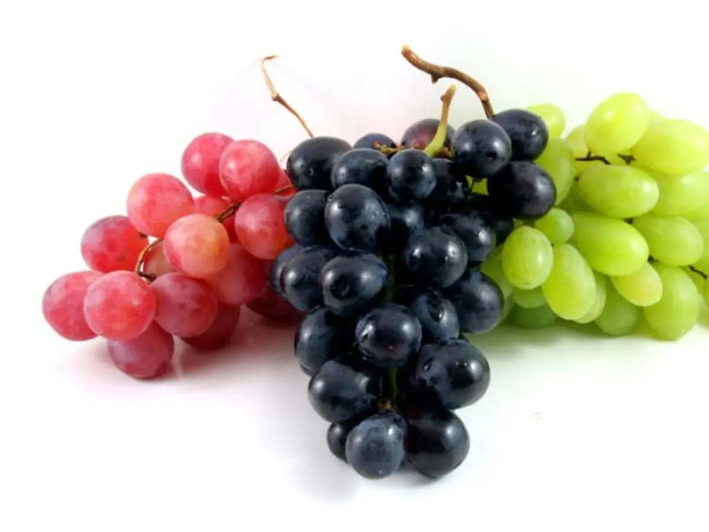
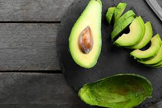
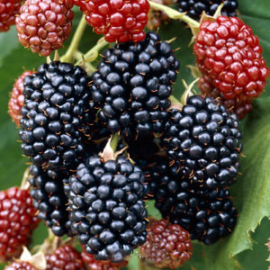
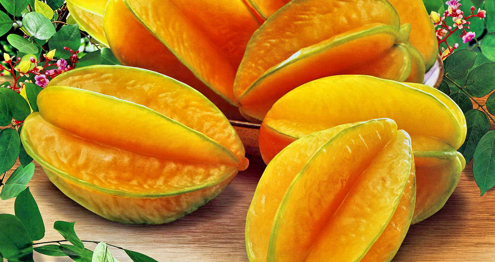

6 Jenis Buah di Sekitar Kita yang Banyak Bermanfaat untuk Kesehatan

Buah anggur mengandung vitamin A, vitamin B komplek, vitamin C, vitamin K, asam galat, glukosida, mangan, zat besi, dan kalsium. Buah anggur terdapat senyawa lain seperti zat polifenol dan resveratol yang dikenal sebagai antioksidan. Buah anggur bermanfaat untuk mengurangi resiko terkena kanker payudara, prostat, dan usus besar. Selain itu buah anggur juga dapat menurunkan resiko stroke, mengontrol gula darah, menyehatkan ginjal dan pencernaan. Kandungan lain buah anggur juga dimanfaatkan untuk antioksidan dan anti mikroba.

Buah alpukat mengandung lemak sehat oleat (omega-9), vitamin A, vitamin B, vitamin B6, vitamin C, vitamin E, zat besi, tembaga, kalium, serat, dan asam solfat. Buah alpukat kaya akan manfaat dan dapat melindungi tubuh dari berbagai penyakit.
Buah apel mengandung vitamin A, vitamin B, vitamin C. kandungan serat pada buah apel dapat membuat kenyang lebih lama pada lambung kita, sehingga buah apel ini cocok untuk diet dan selain itu aman untuk usus kita. Buah apel selain membantu kerja usus halus juga memiliki manfaat lain seperti mengurangi resiko gangguan pernapasan, mengontrol gula dalam darah, mengatasi masalah osteoporosis, membantu mencegah dan mengobati kanker, menurunkan kolesterol, mengatasi diare, serta menyehatkan jantung.
Buah asam mengandung kalsium, fosfor, asam nitrat, asam malat, dan asam pipekolat. Buah asam bermanfaat untuk mengobati sariawan. Manfaat buah asam yang lain yaitu untuk meningkatkan nafsu makan, membantu fungsi organ pencernaan, membantu mengatur kadar kolesterol dan trigliserida, dan juga untuk mengatasi sembelit.

Buah arbei mengandung vitamin A, vitamin B1, vitamin C, protein, lemak, karbohidrat, asam folat, kalsium, dan fosfor. Buah arbei juga memiliki kandungan saponin berupa glikosida, favonoida, polofenol serta memiliki antibakteri. Buah arbei bermanfaat untuk mengobati sariawan, untuk meringankan gejala diare, membantu melawan kanker, sebagai obat tifus dan dapat digunakan untuk mengobati maag.

Buah belimbing mengandung vitamin A, vitamin C, vitamin E, vitamin K, folat, niacin, fosfor, zat besi, kalori, protein, lemak, karbohisrat, serat dan juga kalsium. Buah belimbing bersifat antioksidan dan juga seratnya berguna bagi kesehatan pembuluh darah. Buah belimbing dapat dimanfaatkan untuk mengatasi hipertensi, menurunkan kadar kolesterol. Melancarkan sistem pencernaan, menurunkan berat badan, mengatasi gangguan hati, dan sebagai antioksidan alami.